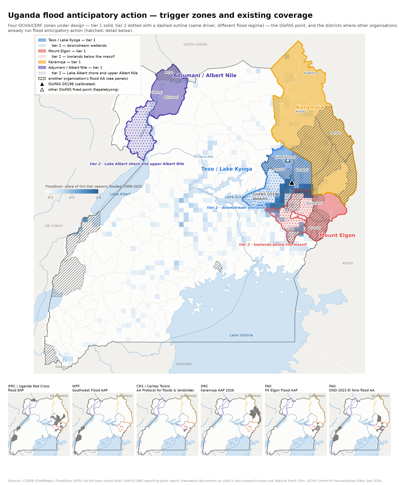

The four OCHA/CERF zones under design, the GloFAS point, and where other organisations' flood anticipatory action already operates.

Regime: riverine. Core: Katakwi, Amuria, Kapelebyong.
Ruled OUT by the coverage check (corr < 0.45 or P < 0.25): Kumi, Bukedea, Pallisa, Butaleja, Kibuku, Budaka, Butebo (Mpologoma system), Kaberamaido, Kalaki, Amolatar, Dokolo, Otuke, Alebtong (Kyoga north shore). Their flooding is not what G5196 sees.
Regime: flash-landslide. Core: Bududa, Bulambuli, Sironko, Manafwa, Namisindwa, Mbale, Kapchorwa, Kween, Bukwo.
Slopes: rainfall-forecast trigger; FloodScan cannot see the hazard, impact record must be report-based. Lowlands: observed extent, river level, or Elgon rainfall with a lag.
Regime: flash. Core: Kaabong, Karenga, Kotido, Abim, Moroto, Napak, Nabilatuk, Nakapiripirit, Amudat.
Rainfall-forecast trigger over a very large area; sub-zoning by river basin likely needed.
Regime: riverine-lake. Core: Adjumani, Moyo, Obongi.
Two regimes in the record: lake backwater (2020, 2021, 2024 at >90th pctl Kyoga/Albert level) and local tributary flash floods at ordinary lake levels. Needs a lake-level leg and a rainfall leg.
GloFAS G5196 (Akokorio at Uganda gauge, river Akokoro) — LISFLOOD v4 pixel 1.775°N 33.875°E, calibrated on a 22-year record. The pixel is the local Akokoro above the Awoja confluence (mean ~7 m³/s), not the Karamoja-fed main stem. There are no GloFAS points on the Albert Nile.
What each covers and how it triggers, from the source documents named in each row. Karamoja drought plans (WFP/FAO PRO-ACT) are not flood frameworks and are not drawn.
Districts: Kasese, Ntoroko, Katakwi, Amuria, Kumi, Ngora, Nabilatuk, Butaleja, Sironko, Bududa, Manafwa, Bulambuli, Moyo, Kampala
Trigger: GloFAS via the 510 IBF portal: >=70% (operationally 60%) probability of a 5-yr RP flood in high-priority districts (10-yr in lower-priority), >1,000 households, 5-day lead, FAR<=0.5
Status: Approved 27 May 2021, 5-yr EAP nominally expired mid-2026 (GO appeal MDRUG048 open to 2026-11-30); no second-generation EAP found. One activation: 15 Nov 2023 (Ntoroko, Butaleja, Kikuube).
Source: EAP summary https://adore.ifrc.org/Download.aspx?FileId=438600 (p.3 district list); MDRUG048 reports
The '16 potentially exposed districts' in the Nov 2023 reports are that event's IBF output, not the design list.
No public assignment of districts to the 5-yr vs 10-yr priority tiers.
Nov 2023 lessons: multiple false alarms in the 2023 El Nino season; episodic floods not captured by the portal.
Districts: Kasese, Ntoroko, Kisoro, Bundibugyo
Trigger: Three-tier (mild/moderate/severe). General readiness: monthly SPI-1 forecast over per-district 3-yr (moderate) / 5-yr (severe) RP thresholds, MAM and SOND, 15 days-1 month lead. Readiness: 7-day 'exceptional rainfall' forecast at the 90th/95th/99th percentile OR daily totals above per-district mm thresholds (e.g. Kasese 14/39/47 mm, Ntoroko 16/27/35 mm for SOND), 7-day lead. Activation: the same exceeded on 2 consecutive forecast days, 5-day lead.
Status: Plan dated 28 Aug 2026, validity Aug 2026-Dec 2028; tier-1 beneficiaries 74,815-103,550 by scenario, budget USD 2.47-3.42 M. Earlier: 2024 MAM desilting, 2025 anticipatory cash (mainly Ntoroko).
Source: Flood Anticipatory Action Plan for Southwestern Uganda, WFP, 28 Aug 2026 (country team share; dev blob raw/external_frameworks/)
WFP/FAO PRO-ACT in the 9 Karamoja districts + Kaberamaido, Katakwi is a DROUGHT AA plan (activated May 2026) with multi-hazard bulletins — no flood trigger; not drawn on the flood map.
Rainfall thresholds are in mm/day within a 7-day forecast; the forecast product is not named in the plan summary.
Districts: Butaleja, Bududa
Trigger: Window 1 (1-month lead): DMS/UNMA seasonal forecast 'likely or very likely' above-normal rainfall for Mt Elgon. Window 2 (7-day lead): DMS forecast of >=70% probability of a 5-yr RP flood via the DMS emergency dashboard and/or VDMC community indicators (3 days above-average rain, W-E wind, animal movement, river turning brown) in Buwali sub-county (Bududa) and Butaleja Town Council.
Status: Validated V5, 7 Jul 2026; pilot budget USD 218,520 (USD 200,000 CRS internal HRD funding pre-arranged; Start Network a possible top-up) (ECHO-consortium lineage: Oxfam Novib lead, CRS, Caritas Tororo, URCS in Bududa, Butaleja, Mbale, Namisindwa, Sironko; AA first triggered by the UNMA OND-2023 El Nino outlook). Sub-county scope: Butaleja TC, Butaleja SC, Himutu, Mazimasa; Bududa Buwali, Bundesi, Busiriwa, Bubita, Bufuma, Bushiyi, Bukibokolo.
Source: Anticipatory Action Protocol for Floods and Landslides, Uganda / Butaleja and Bududa, Validated V5 (country team share; dev blob raw/external_frameworks/)
Threshold set by expert judgement, not a hindcast; MPCA via mobile money.
Districts: Moroto, Napak, Amudat
Trigger: Flash-flood ladder: Kospir River at 80-85% and rising; ~150 mm forecast over a short window; livestock moving to high ground. Drought: SPI <= -1.5, Kobebe dam <50%, body condition <3.0, price falls >30%. Conflict: herd concentration, raiding, youth grouping.
Status: Activated 27 Jul 2026 on the dual drought + conflict trigger (not flood). Cross-border with Kenya (Loima, Lokiriama, North Pokot). Flood-risk analysis flags Napak floodplains as highest risk; 48,000 people forecast displaced by flooding in Uganda under DRC's OND 2026 central scenario.
Source: DRC Karamoja Anticipatory Action Plan AAP2026KS (country team share; dev blob raw/external_frameworks/)
Districts: Mbale, Butaleja, Sironko, Bulambuli, Manafwa, Namisindwa, Bundibugyo, Ntoroko, Kasese, Katakwi
Trigger: Seasonal outlook (OND 2023, 40-45% above-normal) — one-off, no standing threshold
Status: 11 Aug - 31 Dec 2023 only (OSRO/UGA/070/BEL, USD 1M, 78,375 people). FAO's standing AA in Uganda is Karamoja drought/livestock.
Source: FAO project report https://openknowledge.fao.org/server/api/core/bitstreams/22e1fbf6-6ae8-436c-9118-12d9d94482f6/content pp.1-2, 7
Generated 2026-09-04 by pipeline/build_pages.py in
OCHA-DAP/ds-aa-uga-flooding. Work in progress — not a trigger.